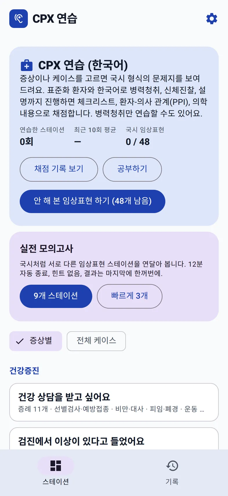
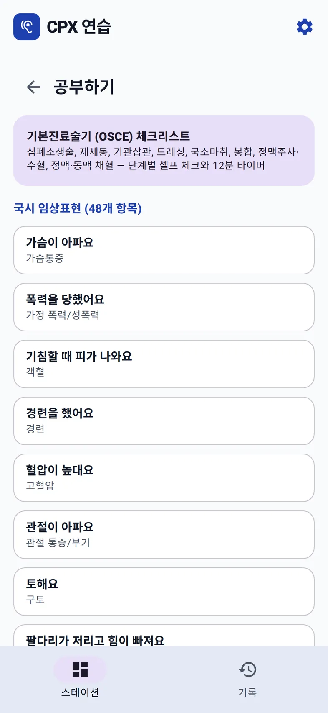

홈 › KMLE CPX 연습 › 48개 임상표현
출제 범위
CPX 48개 임상표현 목록
의사 국가시험 실기시험의 진료문항(CPX)은 48개 임상표현에서 출제된다. 2022년 제86회 하반기 시험부터 적용된 목록으로, 이전의 54개 항목 목록을 대체했다. 38개는 증상으로 시작하는 문항이고 10개는 상담 · 교육 중심 문항이다.
대본을 준비하고, 진찰법을 확인하세요
CPX 대본을 준비할 때 필요한 문진 질문 예문과 신체진찰 목록을 바로 읽을 수 있습니다. 설치·로그인·API 키 없이 열립니다.
전체 목록 · 문진·예문과 P/E 바로가기
각 항목에서 문진·질문 예문 또는 신체진찰 목록으로 이동하세요. 배뇨 이상처럼 여러 학습 페이지로 나뉘는 항목은 세부 증상별로 연결했습니다.
- 가슴통증
- 가정 폭력/성폭력상담
- 객혈
- 경련
- 고혈압상담
- 관절 통증/부기
- 구토
- 근력/감각 이상
- 기분 변화
- 기억력 저하
- 기침
- 나쁜 소식 전하기상담
- 두근거림
- 두통
- 떨림/운동이상
- 목통증/허리통증
- 물질오남용상담
- 발열
- 배뇨 이상
- 배변 이상
- 복통
- 불안
- 붉은색 소변
- 산전 진찰상담
- 성장/발달 지연상담
- 소변량 변화
- 소화불량
- 수면장애
- 쉽게 멍이 듦
- 실신
- 어지럼
- 예방접종상담
- 월경이상/월경통
- 유방통/유방덩이
- 음주 상담/금연 상담상담
- 의식장애
- 이상지질혈증상담
- 자살상담
- 질 분비물/질 출혈
- 체중 감소
- 체중 증가/비만
- 콧물/코막힘
- 토혈
- 피로
- 피부 발진
- 혈변
- 호흡곤란
- 황달
"상담" 표시는 이 사이트가 연습 편의를 위해 붙인 구분이며 국시원의 공식 분류가 아니다.
증상형과 상담형은 준비가 다르다
증상형 (38개)
환자가 증상을 호소하고, 응시자는 병력 청취와 신체진찰로 감별진단을 좁힌 뒤 추정진단과 계획을 설명한다. 준비의 중심은 임상표현마다 감별진단을 기전별로 묶고, 각 묶음을 가르는 질문과 진찰을 정해 두는 것이다. 2026년 7월부터 문제지에 주호소가 없으므로, 어떤 임상표현인지는 환자의 첫 대답을 듣고서야 알 수 있다.
상담형 (10개)
고혈압, 이상지질혈증, 예방접종, 산전 진찰처럼 검사 결과나 건강 문제를 놓고 설명하고 상담하는 문항과, 나쁜 소식 전하기, 자살, 가정 폭력/성폭력, 물질오남용, 음주/금연 상담처럼 면담 기술 자체가 핵심인 문항이 있다. 신체진찰 비중이 낮거나 없을 수 있고, 환자의 생각과 걱정을 묻고 공감하고 계획을 함께 정하는 과정이 점수의 큰 부분을 차지한다.
48개를 빠짐없이 도는 법
범위가 넓어서 자신 있는 항목만 반복하기 쉽다. 연습한 항목을 표시해 가며 안 해 본 항목을 먼저 고르는 것이 가장 단순한 방법이다.
Bedside English의 한국 CPX 트랙에는 48개 임상표현 모두에 스테이션이 있고, 목록 밖의 흔한 증상(눈 충혈, 귀 통증 등)을 다루는 보충 스테이션이 더 있다. 홈 화면이 48개 중 몇 개를 만났는지 보여 주고, 아직 안 해 본 항목을 바로 시작할 수 있다. 같은 임상표현을 다시 골라도 이전에 만나지 않은 증례가 먼저 나온다.
스테이션마다 감별진단 묶음과 꼭 물어야 하는 항목을 정리한 공부 자료가 있고, API 키 없이 읽을 수 있다.


공부 자료의 구성은 CPX 48개 임상표현 공부 노트에 실제 화면으로 정리했다.
한국 CPX 트랙에서 연습하기
키 없이 공부 노트와 체험 환자를 먼저 볼 수 있다. AI 환자와 다양한 케이스를 연습하려면 본인의 Gemini 무료 키를 연결한다. 앱 이용료는 0원이며 Google 무료 등급의 한도가 적용된다.
다음 글: 환자-의사 관계(PPI) 6개 영역 →